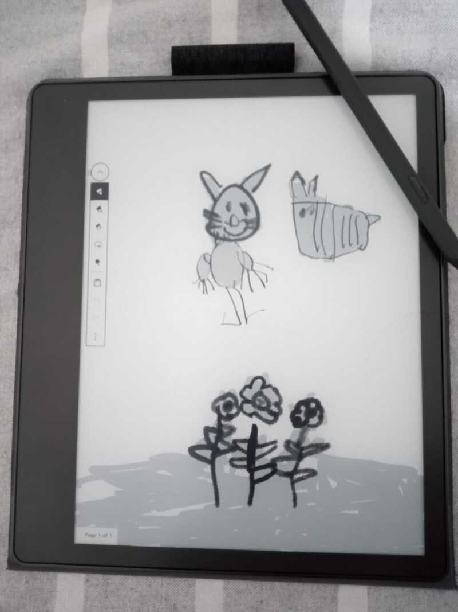

TL;DR: perfecto para leer archivos pdf, horrible si se busca privacidad, molesto el giroscopio ya que la pantalla gira 180 grados y no hay forma de deshabilitarlo.
Ya hace unas semanas Jean Pierre me pudo traer a la vuelta de su viaje por USA un Kindle Scribe *, el cual costó unos 450 USD (32 GB, Premium Pen, sin ningún descuento).
Si bien estaba entre el scribe y un Kobo Elipsa 2e, elegí el scribe por la mayor densidad en píxeles: 300 ppi vs 227 ppi, teniendo un tamaño similar de display: 10.2 in vs 10.3 in.
Mi experiencia en estas semanas de uso:
-
CONTRA para poder utilizar el scribe es imprescindible registrarlo
A diferencia de mis experiencias anteriores con el kindle touch o el kindle paperwhite donde la registración era opcional, en este al prenderlo aparece una pantalla que no puede saltearse que requiere que se registre el kindle usando una cuenta de amazon.
-
PRO la lectura de archivos pdf es espectacular.
-
PRO la función de Notebook y como funciona el lapiz es espectacular y no me lo esperaba cuando compré el scribe.
Mi hija se quedó muy contenta cuando se lo presté para que dibujara.

-
CON para poder extraer los notebook creados es necesario estar en linea y enviar vía email los pdf's.
-
CON para poder tomar notas en los pdf's con el lapiz es necesario subirlos previamente a amazon, que los convierte a un formato que luego permite que sean subrayados.
Para obtener el pdf con las notas hay que volver a subirlos a amazon que nos lo envía por email. Hay que tener en cuenta que el pdf resultante no lo pude editar, por lo que la utilidad de tomar notas me resultó limitada.
Por otro lado, copiando los archivos al scribus en modo offline (sin pasar por amazon), se pueden tomar notas seleccionando palabras en el pdf como se hace en el paperwhite o en el touch, pero se pierde el poder tomar más notas.
-
CON los archivos soportados por el kindle siguen siendo pdf y mobi/azw3.
Si se quiere leer un epub primero hay que convertirlo a azw3, en mi caso utilizando calibre o enviandolos a amazon que los convierte y luego los envía al scribe.
Este es un punto engañoso, ya que se dice que el kindle soporta la mayoría de los formatos, pero en la letra chica indica que los epub y algunos pdf requieren una conversión previa hecha en los servidores de amazon.
-
CON no hay forma de deshabilitar el giroscopio y a cada rato la pantalla está rotando 180 grados.
En resumidas cuentas: muy contento por como se ven los pdfs, muy molesto con que se requiera registrarse a amazon para usarlo y apenado porque para sacarle provecho al equipo hay que perder privacidad (pasando por los servidores de amazon para cargar libros al equipo y descargar notas de este) o resignarse a tener las funcionalidades recortadas.
Ya que mi principal caso de uso es la lectura de pdfs y no esperaba tomar notas diría que fué un empate, pero me queda la duda de si el kobo elipsa hubiera sido mejor.